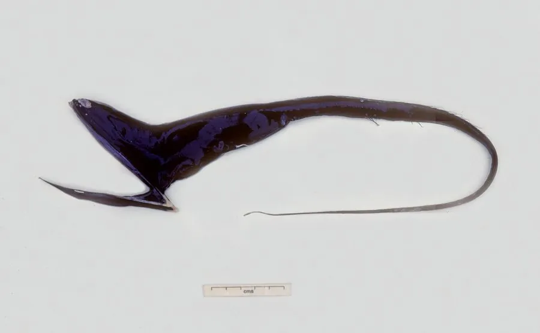

鱼类 · 动物界
吞噬鳗 Eurypharynx pelecanoides

生活在深海的细长鱼类，口裂极大、下颌如袋，能把比自己更大的猎物整个吞下，尾端还有发光的诱饵。
- 分类
- 门脊索动物门纲硬骨鱼纲目宽咽鱼目科宽咽鱼科属宽咽鱼属
- 栖息环境
- 全球热带和温带 500–3000 m 的深海中层水域
- 地理分布
- 全球热带和温带深海，各大洋均有记录
- 保护级别
- 暂无评估
物种志
吞噬鳗体长一般 60–80 cm，最长记录约 1 m。身体细长如鞭，尾部逐渐变细，末端有一个发光的膨大结构；头部极大，口裂可张开到体长的三分之一，下颌像一个松弛的袋子，胃能极度扩张，可以吞下比自己更大的猎物。
吞噬鳗分布于全球热带和温带的深海，通常生活在 500–3000 m 的水层，是深海拖网中偶见的种类。它没有鳔，也没有肋骨，骨骼轻而柔软；眼睛很小，靠尾部发光器发出的光诱集猎物，巨大的口腔形成一个“陷阱”，把靠近的小鱼和甲壳类一口吞下。由于生活在极深的水域，人类对它的了解主要来自拖网标本和潜水器拍摄。目前吞噬鳗没有IUCN 的正式评估，也未列入中国国家重点保护野生动物名录。
形态与习性
- 食性吞食小鱼、甲壳类和头足类
- 体长一般 60–80 cm，最长约 1 m
- 口裂可张开到体长的三分之一
- 发光尾端有发光的膨大结构，用于诱集猎物
- 骨骼无鳔、无肋骨，骨骼轻而柔软
- 栖息深度通常 500–3000 m
趣味知识
- 吞噬鳗的嘴能张到体长的三分之一，下颌像一个松弛的袋子。
- 它的胃可以极度扩张，吞下比自己更大的猎物。
- 尾端的发光结构是它的诱饵，在漆黑的深海里格外醒目。